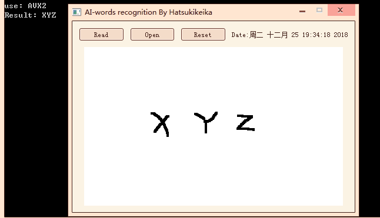

Intro
Hi, This is Yi.
I'm a passionate programmer who graduated from NC State University's Graduate School in 2022. I love to spend my effort into coding
well-organized code & programs to make them efficient and easy to extend, not only as my career but also as a hobby.
During my school years, I learned Big Data, Machine Learning, SDE, Computer Vision, etc. Among the many fields of Computer Science,
I excel in software engineering and participated in both individual and team projects.
Besides computers, I also have other hobbies. I have a strong thirst for knowledge that is not limited to computer's, such as Law, Medica,
hardware, and cooking.
I'm an Anime fan, analyzing the details of the plot and the way how the story is expressed is also one of my passions. During the communication
with other Anime fans, I found that I have good critical thinking and am willing to accept a different point of view. One of my favorite Anime shows is
"Steins; Gate".
Contact
You can always hit me up through my perma email:
xuegao60189@gmail.com
Or try a faster way using the form here:
Handwrite AI OCR
Keywords:
Image processing, TensorFlow, PYQT, Python

This tool allows users to open an image from the device or write down something by using a mouse on its whiteboard.
Words in the input will be captured and sliced into single letters through Image processing techniques and thresholding.
After passing the letters into the ML model, the console will display the proper result.
My Game Engine
Keywords:
ZMQ, SFML, C++
A simple game engine which builds from the ground up, using a combination of inheritance & composition.
It is simple but comprehensive. It covers Event Systems, Time clock, Replay, External Script Support, and Multiplayer Support.
Games created by this game engine include platformer games, bubble shooter, and snake game.
Automation Tool

This project is done during my internship at Dell Technologies, Shanghai.
It is a tool that can automatically travel through all the possible action paths within a given window.
Unfortunately, I cannot provide further details here due to Dell's Confidentiality Agreement.
Spartan Trade
Member:
Yi Qiu, Shiyang Xiao, Pil Han, Harman Bains
Keywords:
RESTful, Spring, JSP, bootstrap
This project was elected to be the best senior capstone of Spring 2020 and displayed in the UNCG's Computer Science Department Building.
Spartan Trade is a web-based trading system, the purpose is for students & teaching staffs
to list their WTS/WTB for any item.
I played an important role in this team, by implementing the API client and helping my team member with both the UI implementation and UI Multi-platform adaptation.
And I also helped my team to integrate Front-end, API client, and API endpoint to make this project run as a whole.
Expertiza: E2115
Member:
Yi Qiu, Ryan Smith, Jose Molina Melendez, Bahati Wanza
Keywords:
Ruby, Ruby on Rails, NCSU
This project's pull request was approved and merged to NCSU's Expertiza project.
Expertiza is a web student management system under NCSU and is supported by the National Science Foundation.
This application allows students to grade, submit, and peer-review learning objects.
Our team provided a solution to the existing issue of expertiza and created an extension to allow the expertiza to
support more functions (Mentor management for assignments without topics), I played a developer role in this
team and provided a well-decoupled code. Our implementation and unit testing passed the review and checking process by
the offcial expertiza team.
Amazing
Member:
Yi Qiu, Stuart Pelletier, Grey Jenkins, Luke Knudsen
Keywords:
Unity, PCG, Scripting
Amazing is a 2D top-down maze game, the game content is randomly and automatically generated by the level.
The key algorithm we used for this game is Kruskal spanning tree. In this project, I mainly take charge of
handling character's movement, character's collision, and character's interaction with other elements.
WMS Global
Member:
Yi Qiu, Larry Guo, SHITOUREN
Keywords:
Warehouse, Vue, Spring, DATA JPA, JWT, AWS
WMS Global is a Cross-border e-commerce warehouse management system. It allows the sellers to interact with their warehouse,
the actions include sellers uploading labels, sellers moving packages to a new warehouse location,
sellers requesting the warehouse to create shipments, etc. This project is not completed yet, and it is temporarily paused due to understaffing.
The API backend is almost completed, the integration is around 30% there. The front-end UI needs a refactor which is already on our TODO list.